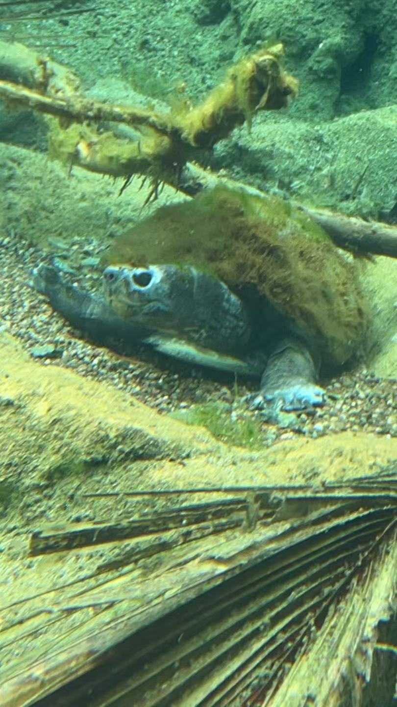

School
Hello, I am a forth year UCSD student majoring in math-CS and minor in data science.
I study at UCSD from to .
I taken courses including CSE, DSC, MATH and other general education courses.
Hello, I am a forth year UCSD student majoring in math-CS and minor in data science.
I study at UCSD from to .
I taken courses including CSE, DSC, MATH and other general education courses.
I did some projects besides the courses in school. Please check them in Projects.
The link contains projects I attended from to
Though it is unnecessary, I want to put an image here.
